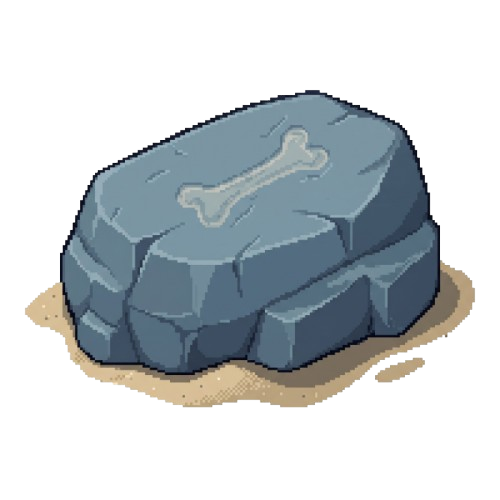

07:05In bed
Your phone lights up.
07:05
1 notification
3 new likes on your post
- YouOpen the phone
- Right after?
- Next morning?
Dino Dig · After the dig
In the dig, a bone kept you hitting. Out here the bones are smaller: a like, a free coffee, a quiet car. Follow one ordinary day and find them.

Hit the slabWhat comes right after an action changes how often you do it again.
Thorndike called this the law of effect. Skinner named the learning operant conditioning.
Operant means actions you choose. Classical conditioning is the other kind: reflexes set off by what comes before.
Dawn · 07:00 – 10:00
A consequence adds something or takes something away. Then the action becomes more likely (reinforcement) or less likely (punishment). Four mornings, four combinations.
07:05In bed
08:10In the car
It won’t stop until you buckle up.
09:05Lecture
Lecturer…so the law of effect says—
Youpsst, did you eat yet?
LecturerYou at the back. Something to share with everyone?
120 heads turn.
09:40Results
10:00Break
Two questions sort every consequence.
Midday · 12:00 – 14:00
All morning, every action paid off every time. That’s continuous reinforcement. Most of life pays only some of the time: partial reinforcement. Some rules count how many times you act.
12:40Lunch
Kopi CornerLoyalty card
Stamp 0 of 5.
13:20Mall
The claw machine by the lift.
RM1 a try.
Afternoon · 15:00 – 17:00
Other rules don’t care how often you act. Time has to pass first. Then one action collects the reward.
15:00Home
Here a whole day lasts 5 seconds.
Check whenever you like.
16:20Waiting
You never know when it’ll come.
still on for tonight?
Delivered
Check whenever you like.
17:00Bus home
Count actions · fixed
Fixed ratio FR
Bursts, then a pause.
Coffee card · Blue slab
You: not tried yet
Count time · fixed
Fixed interval FI
Pause, then a rush near the time.
Post at 3:00 · Green pit
You: not tried yet
Count actions · changing
Variable ratio VR
Fastest. No pause.
 Claw machine · Orange slab
Claw machine · Orange slab
You: not tried yet
Count time · changing
Variable interval VI
Slow and steady. No pause.
 Waiting for a reply · Purple pit
Waiting for a reply · Purple pit
You: not tried yet
Each line shows total actions climbing over time. Each tick is a reward. Same scale in all four.
Dusk · 18:00 – 19:30
In the dig, one slab quietly stopped paying at dusk. Most people kept hitting it for a while. What happens when a reward just stops?
18:30Hostel
It has paid every single time before.
Press B4 for a snack.
The claw machine stops paying too. Which one do you give up on first?
Illustration of the pattern, not measured data.
Night · 21:00 – 23:30
The dig ends at sunset. Your day doesn’t. The same rules work for you once you choose what comes right after.
21:00Desk
Don’t start at 25. Reward each step, right away.
Start with the smallest step.
22:30Bed
It tells you a reward is waiting.
Red dot on: you tap.
22:45Plan
23:30Lights off
You know these rules now. Which one keeps your thumb moving?
Your day, in rules
Built for the PSY 111 exhibition on operant conditioning. Concepts follow the course lecture Learning (Part 1) and Kosslyn & Rosenberg, Introducing Psychology. The everyday examples show common patterns. They don’t describe any one person.